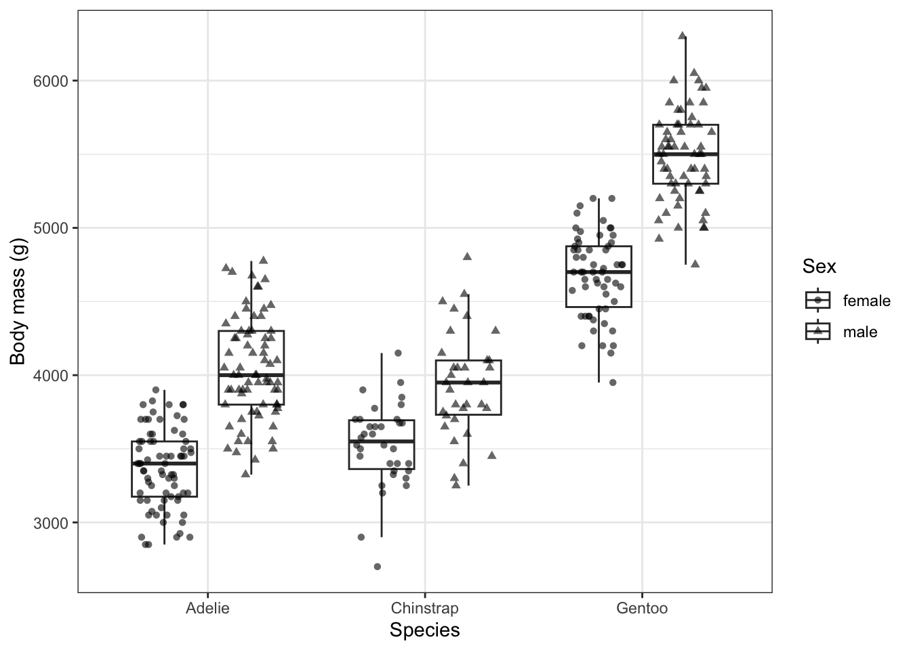
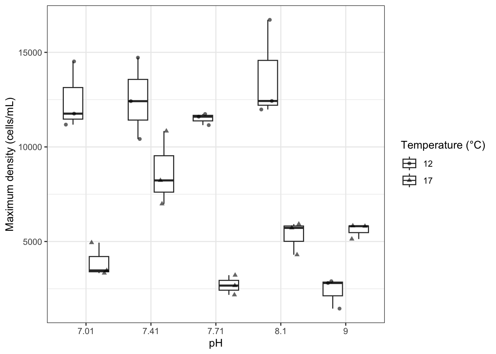

karenia <- read_csv("../data/karenia-density.csv") |>
# Convert temp and ph from numeric to factor
mutate(
temp = factor(temp),
ph = factor(ph)
)Overview
Blooms of the toxic dinoflagellate Karenia selliformis have caused mass mortality of marine fauna in Patagonia, Chile. Coastal waters there vary widely in temperature and pH with the seasons, and climate change is expected to shift both. If the two stressors interact, then knowing how K. selliformis responds to pH at one temperature won’t tell us how it responds at another.
Vellojin et al. (2023) grew a Patagonian strain of K. selliformis in a factorial experiment crossing two temperatures with five pH levels. There were 3 replicate cultures per treatment, 30 cultures in total. Today’s question:
Does the effect of pH on maximum bloom density depend on temperature?
You’ll work through five steps with your group, then present your results to students who studied a different system. Fill in each ____, and answer the questions as you go.
The data
- temp: temperature treatment: 12 or 17 °C
- ph: pH treatment: 7.01, 7.41, 7.71, 8.1, or 9
- replicate: replicate culture within the treatment (1-3)
- max_density: maximum cell density reached in the culture (cells/mL)
Step 1: Visualize the data
Here we have two categorical predictors (ph and temp) and a continuous response (max_density). One way to visualize a continuous response across two categories is to combine dodging and jittering. Here’s how to do that with the penguins data frame.
palmerpenguins::penguins |>
drop_na(sex) |>
ggplot(aes(x = species, y = body_mass_g, shape = sex)) +
geom_boxplot(
# "dodge" the boxplots so they appear side-by-side
position = position_dodge(width = 0.8),
width = 0.6,
# avoid plotting outliers twice (the points already show them)
outlier.shape = NA
) +
geom_point(
# "jitter" the points left to right within categories, "dodge" them so the categories appear side-by-side
position = position_jitterdodge(jitter.width = 0.5, dodge.width = 0.8),
alpha = 0.6
) +
labs(x = "Species", y = "Body mass (g)", shape = "Sex")
Plot the Karenia data below, using the same dodge and jitter technique.
ggplot(karenia, aes(x = ph, y = max_density, shape = temp)) +
geom_boxplot(
position = position_dodge(width = 0.8),
width = 0.6,
outlier.shape = NA
) +
geom_point(
position = position_jitterdodge(jitter.width = 0.5, dodge.width = 0.8),
alpha = 0.6
) +
labs(x = "pH", y = "Maximum density (cells/mL)", shape = "Temperature (°C)")
Based on this visualization:
Does ph appear to have an effect on max_density? What pattern in the visualization suggests that?
Answer: Yes, but the pattern differs by temperature. At 12 °C, density stays high from pH 7.01 to 8.1, then crashes at pH 9. At 17 °C, density jumps around across pH, with no crash at pH 9.
Does temp appear to have an effect on max_density? What pattern in the visualization suggests that?
Answer: Yes. From pH 7.01 to 8.1, the 12 °C boxes sit well above the 17 °C boxes. At pH 9 the order flips.
Does temp appear to have an effect on the relationship between ph and max_density? What pattern in the visualization suggests that?
Answer: Yes. The gap between temperatures changes size across pH and even reverses: going from 12 to 17 °C lowers mean density by about 8,600 cells/mL at pH 7.01, but raises it by about 3,200 cells/mL at pH 9.
Step 2: Decide on your models
The question is whether the effect of pH depends on temperature. Which model says it doesn’t? Which model says it does? Those are your simpler and complex models. Fill in the formulas, and work out \(p\), the number of coefficients each model estimates, including the intercept.
| Model | R formula | \(p\) |
|---|---|---|
| Simpler | max_density ~ ph + temp |
6 |
| Complex | max_density ~ ph * temp |
10 |
Tip
Each categorical predictor gets one coefficient for each non-reference level. An interaction gets one coefficient for each combination of non-reference levels. You can check your counts in Step 3 with coef().
Write your hypotheses.
\(H_0\): The effect of pH on maximum density is the same at both temperatures.
\(H_A\): The effect of pH on maximum density depends on temperature.
Step 3: Fit both models
simpler_lm <- lm(max_density ~ ph + temp, karenia)
complex_lm <- lm(max_density ~ ph * temp, karenia)
coef(simpler_lm)(Intercept) ph7.41 ph7.71 ph8.1 ph9 temp17
10840.767 2403.333 -1106.167 1311.667 -4211.667 -5281.533 coef(complex_lm) (Intercept) ph7.41 ph7.71 ph8.1 ph9
12486.66667 33.33333 -989.00000 1223.33333 -10100.00000
temp17 ph7.41:temp17 ph7.71:temp17 ph8.1:temp17 ph9:temp17
-8573.33333 4740.00000 -234.33333 176.66667 11776.66667 Step 4: Compare the models with ANOVA
anova(simpler_lm, complex_lm)Analysis of Variance Table
Model 1: max_density ~ ph + temp
Model 2: max_density ~ ph * temp
Res.Df RSS Df Sum of Sq F Pr(>F)
1 24 203151181
2 20 42555384 4 160595797 18.869 1.449e-06 ***
---
Signif. codes: 0 '***' 0.001 '**' 0.01 '*' 0.05 '.' 0.1 ' ' 1Recall the F statistic:
\[ F = \frac{(RSS_{simple} - RSS_{complex}) \ / \ (p_{complex} - p_{simple})}{RSS_{complex} \ / \ (n - p_{complex})} \]
Find each piece in your table, and check that you get the same F as R.
rss_simple <- 203151181
rss_complex <- 42555384
p_simple <- 6
p_complex <- 10
n <- 30
((rss_simple - rss_complex) / (p_complex - p_simple)) /
(rss_complex / (n - p_complex))[1] 18.86903In your own words, what does this F statistic say about the interaction?
Answer: \(F_{4, 20} = 18.87\). Each coefficient spent on the interaction removes about 19 times more unexplained variation than a residual degree of freedom holds.
Step 5: Interpret
Complete the sentences, using your F statistic and p-value and \(\alpha = 0.05\):
If there were no interaction between pH and temperature, we’d see an F at least as large as ____ in ____ of samples. So we [reject / fail to reject] \(H_0\). We [have / don’t have] evidence that the effect of pH on maximum density depends on temperature.
Answer: If there were no interaction between pH and temperature, we’d see an F at least as large as 18.87 in about 0.0001% of samples (\(F_{4,20} = 18.87\), \(p \approx 1.4 \times 10^{-6}\)). So we reject \(H_0\). We have evidence that the effect of pH on maximum density depends on temperature.
Prepare for the jigsaw
You’ll have 3 minutes to teach this system to students who haven’t seen it. Everyone in your group should be ready to present:
- The system: what organism, which two stressors, and what response?
- The models: your simpler and complex models, and how many coefficients the interaction costs
- The plot: your Step 1 figure
- The result: F, its degrees of freedom, the p-value, and your interpretation in one sentence about the system
References
Vellojin, J. P., Mardones, J. I., Vargas, V., Leal, P. P., Corredor-Acosta, A., & Iriarte, J. L. (2023). Potential effects of climate change on the growth response of the toxic dinoflagellate Karenia selliformis from Patagonian waters of Chile. Progress in Oceanography, 211, 102956. https://doi.org/10.1016/j.pocean.2022.102956
Data: Vellojin, J. P., Mardones, J. I., Vargas, V., Leal, P. P., Corredor-Acosta, A., & Iriarte, J. L. (2023). Seawater carbonate chemistry and the growth response of the toxic dinoflagellate Karenia selliformis from Patagonian waters of Chile [Dataset]. PANGAEA. https://doi.org/10.1594/PANGAEA.960040, licensed under CC BY 4.0.